Chart Control has some pre-defined skins, which can be controlled through a single property setting. Essential Chart control allows the user to customize its appearance by applying pre-defined Interiors.
Some of the available skins are:
· Office2007Black
· Office2007Blue
· Office2007Silver
· Almond
· Blend
· Blueberry
· Marble
· Midnight
· Monochrome
· Olive
· Sandune
· Turquoise
· Vista
· VS2010
|
[C#] this.chartControl1.Skins = Skins.Office2007Blue; |
|
[VB] Me.chartControl1.Skins = Skins.Office2007Blue |
The following output is displayed when the Skins value is set to Office2007 Black.
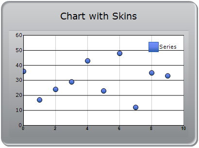
Figure 329: Office2007 Black
The following output is displayed when the Skins value is set to Office2007 Blue.
Figure 330: Office2007 Blue
The following output is displayed when the Skins value is set to Office2007 Silver.
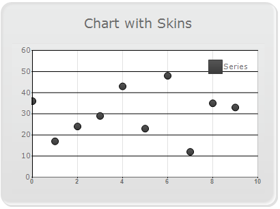
Figure 331: Office2007 Silver
The following output is displayed when the Skins value is set to Almond.
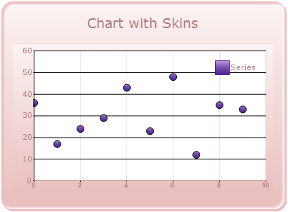
Figure 332: Almond
The following output is displayed when the Skins value is set to Blend.
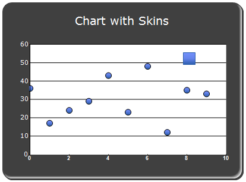
Figure 333: Blend
The following output is displayed when the Skins value is set to Blueberry.
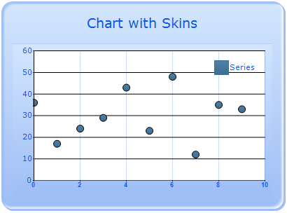
Figure 334: Blueberry
The following output is displayed when the Skins value is set to Marble.
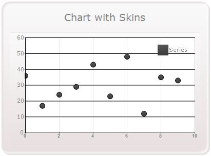
Figure 335: Marble
The following output is displayed when the Skins value is set to Midnight.
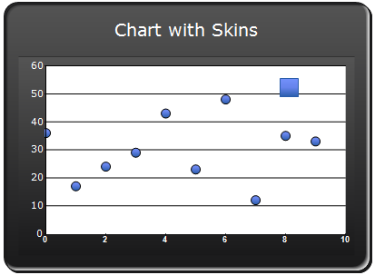
Figure 336: Midnight
The following output is displayed when the Skins value is set to Monochrome.
Figure 337: Monochrome
The following output is displayed when the Skins value is set to Olive.
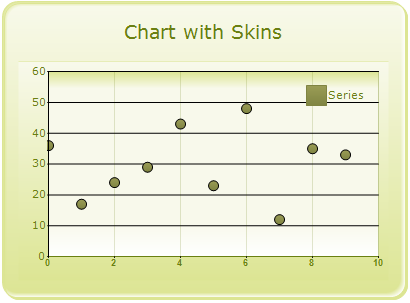
Figure 338: Olive
The following output is displayed when the Skins value is set to Sandune.
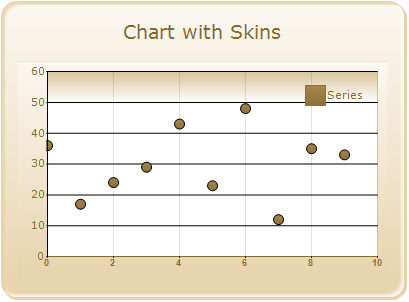
Figure 339: Sandune
The following output is displayed when the Skins value is set to Turquoise.
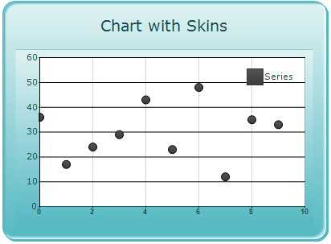
Figure 340: Turquoise
The following output is displayed when the Skins value is set to Vista.
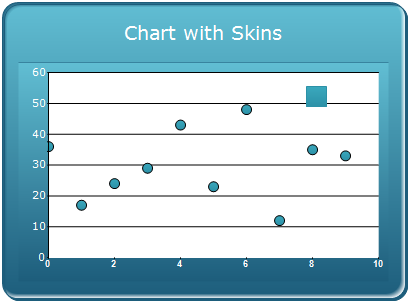
Figure 341: Vista
The following output is displayed when the Skins value is set to VS2010.
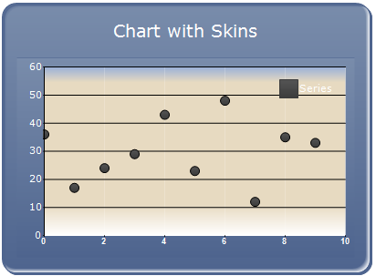
Figure 342: VS2010
|
[C#] ChartSeries ser1 = new ChartSeries("Series 1"); ser1.Type = ChartSeriesType.StackingColumn; // specifing group name . ser1.StackingGroup = "FirstGroup"; ChartSeries ser2 = new ChartSeries("Series 2"); ser2.Type = ChartSeriesType.StackingColumn; // specifing group name . ser2.StackingGroup = "SecondGroup"; ChartSeries ser3 = new ChartSeries("Series 3"); ser3.Type = ChartSeriesType.StackingColumn; // specifing group name . ser3.StackingGroup = "FirstGroup"; |
|
[VB] Dim ser1 As New ChartSeries("Series 1") ser1.Type = ChartSeriesType.StackingColumn ' specifing group name . ser1.StackingGroup = "FirstGroup" Dim ser2 As New ChartSeries("Series 2") ser2.Type = ChartSeriesType.StackingColumn ' specifing group name . ser2.StackingGroup = "SecondGroup" Dim ser3 As New ChartSeries("Series 3") ser3.Type = ChartSeriesType.StackingColumn ' specifing group name . ser3.StackingGroup = "FirstGroup" |